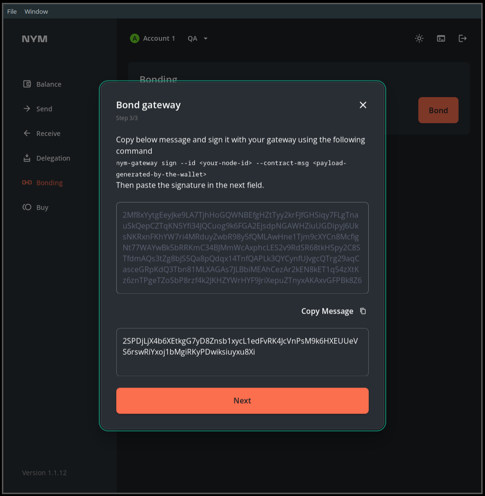
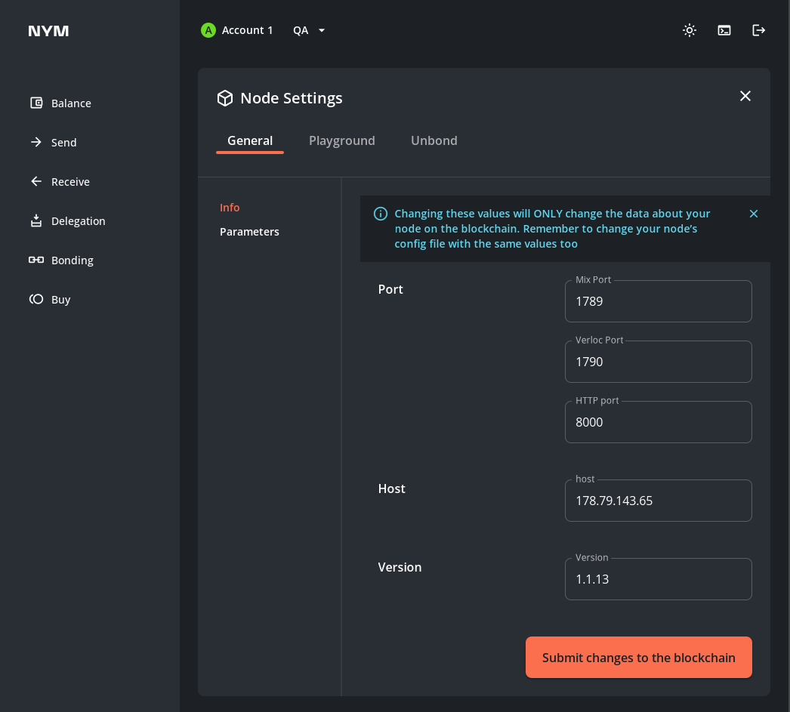

Gateways
The Nym gateway was built in the building nym section. If you haven't yet built Nym and want to run the code, go there first.
Preliminary steps
There are a couple of steps that need completing before starting to set up your gateway:
- preparing your wallet
- requisitioning a VPS (Virtual Private Server)
Wallet preparation
Mainnet
Before you initialise and run your gateway, head to our website and download the Nym wallet for your operating system. If pre-compiled binaries for your operating system aren't availiable, you can build the wallet yourself with instructions here.
If you don't already have one, please create a Nym address using the wallet, and fund it with tokens. The minimum amount required to bond a gateway is 100 NYM, but make sure you have a bit more to account for gas costs.
NYM can be purchased via Bity from the wallet itself, and is currently present on several exchanges. Head to our telegram channels to find out where to get NYM tokens.
Remember that you can only use native Cosmos
NYMtokens to bond your gateway. You cannot use ERC20 representations ofNYMto run a node.
Sandbox testnet
Make sure to download a wallet and create an account as outlined above. Then head to our token faucet and get some tokens to use to bond it.
VPS Hardware Specs
You will need to rent a VPS to run your mix node on. One key reason for this is that your node must be able to send TCP data using both IPv4 and IPv6 (as other nodes you talk to may use either protocol.
We currently have these rough specs for VPS hardware:
- Processors: 2 cores are fine. Get the fastest CPUs you can afford.
- RAM: Memory requirements depend on the amount of users your Gateway will be serving at any one time. If you're just going to be using it yourself, then minimal RAM is fine. If you're running your Gateway as part of a Service Grant, get something with at least 4GB RAM.
- Disks: much like the amount of RAM your Gateway could use, the amount of disk space required will vary with the amount of users your Gateway is serving. If you're running your Gateway as part of a Service Grant, get something with at least 40GB storage.
Gateway setup
Now that you have built the codebase, set up your wallet, and have a VPS with the nym-gateway binary, you can set up your gateway with the instructions below.
Viewing command help
You can check that your binaries are properly compiled with:
./nym-gateway --help
```
_ __ _ _ _ __ ___
| '_ \| | | | '_ \ _ \
| | | | |_| | | | | | |
|_| |_|\__, |_| |_| |_|
|___/
(gateway - version {{platform_release_version}})
nym-gateway {{platform_release_version}}
Nymtech
Implementation of the Nym Mixnet Gateway
USAGE:
nym-gateway [OPTIONS] <SUBCOMMAND>
OPTIONS:
--config-env-file <CONFIG_ENV_FILE>
Path pointing to an env file that configures the gateway
-h, --help
Print help information
-V, --version
Print version information
SUBCOMMANDS:
completions Generate shell completions
generate-fig-spec Generate Fig specification
help Print this message or the help of the given subcommand(s)
init Initialise the gateway
node-details Show details of this gateway
run Starts the gateway
sign Sign text to prove ownership of this mixnode
upgrade Try to upgrade the gateway
```
You can also check the various arguments required for individual commands with:
./nym-gateway <command> --help
Initialising your gateway
To check available configuration options use:
./nym-gateway init --help
```
_ __ _ _ _ __ ___
| '_ \| | | | '_ \ _ \
| | | | |_| | | | | | |
|_| |_|\__, |_| |_| |_|
|___/
(gateway - version {{platform_release_version}})
nym-gateway-init
Initialise the gateway
USAGE:
nym-gateway init [OPTIONS] --id <ID> --host <HOST> --wallet-address <WALLET_ADDRESS>
OPTIONS:
--announce-host <ANNOUNCE_HOST>
The host that will be reported to the directory server
--clients-port <CLIENTS_PORT>
The port on which the gateway will be listening for clients gateway-requests
--datastore <DATASTORE>
Path to sqlite database containing all gateway persistent data
--enabled-statistics <ENABLED_STATISTICS>
Enable/disable gateway anonymized statistics that get sent to a statistics aggregator server
-h, --help
Print help information
--host <HOST>
The custom host on which the gateway will be running for receiving sphinx packets
--id <ID>
Id of the gateway we want to create config for
--mix-port <MIX_PORT>
The port on which the gateway will be listening for sphinx packets
--mnemonic <MNEMONIC>
Cosmos wallet mnemonic needed for double spending protection
--statistics-service-url <STATISTICS_SERVICE_URL>
URL where a statistics aggregator is running. The default value is a Nym aggregator server
--validator-apis <VALIDATOR_APIS>
Comma separated list of endpoints of the validators APIs
--validators <VALIDATORS>
Comma separated list of endpoints of the validator
--wallet-address <WALLET_ADDRESS>
The wallet address you will use to bond this gateway, e.g.
nymt1z9egw0knv47nmur0p8vk4rcx59h9gg4zuxrrr9
```
The following command returns a gateway on your current IP with the id of supergateway:
./nym-gateway init --id supergateway --host $(curl ifconfig.me) --wallet-address <WALLET_ADDRESS> --enabled-statistics true
The $(curl ifconfig.me) command above returns your IP automatically using an external service. Alternatively, you can enter your IP manually wish. If you do this, remember to enter your IP without any port information.
Bonding your gateway
Via the Desktop wallet
You can bond your gateway via the Desktop wallet.
-
Open your wallet, and head to the
Bondpage, then select the node type and input your node details. Presscontinue -
You will be asked to run a the
signcommand with yourgateway- copy and paste the long signature as the value of--contract-msgand run it. It will look something like this:
```
./nym-gateway sign --id upgrade_test --contract-msg 2Mf8xYytgEeyJke9LA7TjhHoGQWNBEfgHZtTyy2krFJfGHSiqy7FLgTnauSkQepCZTqKN5Yfi34JQCuog9k6FGA2EjsdpNGAWHZiuUGDipyJ6UksNKRxnFKhYW7ri4MRduyZwbR98y5fQMLAwHne1Tjm9cXYCn8McfigNt77WAYwBk5bRRKmC34BJMmWcAxphcLES2v9RdSR68tkHSpy2C8STfdmAQs3tZg8bJS5Qa8pQdqx14TnfQAPLk3QYCynfUJvgcQTrg29aqCasceGRpKdQ3Tbn81MLXAGAs7JLBbiMEAhCezAr2kEN8kET1q54zXtKz6znTPgeTZoSbP8rzf4k2JKHZYWrHYF9JriXepuZTnyxAKAxvGFPBk8Z6KAQi33NRQkwd7MPyttatHna6kG9x7knffV6ebGzgRBf7NV27LurH8x4L1uUXwm1v1UYCA1WSBQ9Pp2JW69k5v5v7G9gBy8RUcZnMbeL26Qqb8WkuGcmuHhaFfoqSfV7PRHPpPT4M8uRqUyR4bjUtSJJM1yh6QSeZk9BEazzoJqPeYeGoiFDZ3LMj2jesbJweQR4caaYuRczK92UGSSqu9zBKmE45a
_ __ _ _ _ __ ___
| '_ \| | | | '_ \ _ \
| | | | |_| | | | | | |
|_| |_|\__, |_| |_| |_|
|___/
(nym-gateway - version 1.1.13)
>>> attempting to sign 2Mf8xYytgEeyJke9LA7TjhHoGQWNBEfgHZtTyy2krFJfGHSiqy7FLgTnauSkQepCZTqKN5Yfi34JQCuog9k6FGA2EjsdpNGAWHZiuUGDipyJ6UksNKRxnFKhYW7ri4MRduyZwbR98y5fQMLAwHne1Tjm9cXYCn8McfigNt77WAYwBk5bRRKmC34BJMmWcAxphcLES2v9RdSR68tkHSpy2C8STfdmAQs3tZg8bJS5Qa8pQdqx14TnfQAPLk3QYCynfUJvgcQTrg29aqCasceGRpKdQ3Tbn81MLXAGAs7JLBbiMEAhCezAr2kEN8kET1q54zXtKz6znTPgeTZoSbP8rzf4k2JKHZYWrHYF9JriXepuZTnyxAKAxvGFPBk8Z6KAQi33NRQkwd7MPyttatHna6kG9x7knffV6ebGzgRBf7NV27LurH8x4L1uUXwm1v1UYCA1WSBQ9Pp2JW69k5v5v7G9gBy8RUcZnMbeL26Qqb8WkuGcmuHhaFfoqSfV7PRHPpPT4M8uRqUyR4bjUtSJJM1yh6QSeZk9BEazzoJqPeYeGoiFDZ3LMj2jesbJweQR4caaYuRczK92UGSSqu9zBKmE45a
>>> decoding the message...
>>> message to sign: {"nonce":0,"algorithm":"ed25519","message_type":"gateway-bonding","content":{"sender":"n1ewmme88q22l8syvgshqma02jv0vqrug9zq9dy8","proxy":null,"funds":[{"denom":"unym","amount":"100000000"}],"data":{"gateway":{"host":"62.240.134.189","mix_port":1789,"clients_port":9000,"location":"62.240.134.189","sphinx_key":"FKbuN7mPdoCG9jA3CkAfXxC5X4rHhqeMVtmfRtJ3cFZd","identity_key":"3RoAhR8gEdfBETMjm2vbMFzKddxXDdE9ygBAnJHWqSzD","version":"1.1.13"}}}}
```
- Copy the resulting signature:
>>> The base58-encoded signature is:
2SPDjLjX4b6XEtkgG7yD8Znsb1xycL1edFvRK4JcVnPsM9k6HXEUUeVS6rswRiYxoj1bMgiRKyPDwiksiuyxu8Xi
- And paste it into the wallet nodal, then confirm the transaction.

- Your gateway is now bonded.
You are asked to
signa transaction on bonding so that the mixnet smart contract is able to map your nym address to your node. This allows us to create a nonce for each account and defend against replay attacks.
Via the CLI (power users)
If you want to bond your mix node via the CLI, then check out the relevant section in the Nym CLI docs.
Running your gateway
The run command starts the gateway:
./nym-gateway run --id supergateway
```
Starting gateway supergateway...
To bond your gateway you will need to install the Nym wallet, go to https://nymtech.net/get-involved and select the Download button.
Select the correct version and install it to your machine. You will need to provide the following:
Identity Key: 6jWSJZsQ888jwzi1CBfkHefiDdUEjgwfeMfJU4RNhDuk
Sphinx Key: HbqYJwjmtzDi4WzGp7ehj8Ns394sRvJnxtanX28upon
Host: 62.240.134.46 (bind address: 62.240.134.46)
Version: 1.1.
Mix Port: 1789, Clients port: 9000
Data store is at: "/home/mx/.nym/gateways/supergateway/data/db.sqlite"
2022-04-27T16:04:33.831Z INFO nym_gateway::node > Starting nym gateway!
2022-04-27T16:04:34.268Z INFO nym_gateway::node > Starting mix packet forwarder...
2022-04-27T16:04:34.269Z INFO nym_gateway::node > Starting mix socket listener...
2022-04-27T16:04:34.269Z INFO nym_gateway::node::mixnet_handling::receiver::listener > Running mix listener on "62.240.134.46:1789"
2022-04-27T16:04:34.269Z INFO nym_gateway::node
> Starting client [web]socket listener...
2022-04-27T16:04:34.269Z INFO nym_gateway::node > Finished nym gateway startup procedure - it should now be able to receive mix and client traffic!
```
Upgrading your gateway
Upgrading your node is a two-step process:
- Updating the binary and
config.tomlon your VPS - Updating the node information in the mixnet smart contract. This is the information that is present on the mixnet explorer.
These instructions are specifically regarding upgrading your gateway binary from one version to another. If you want to change node information such as the listening port, you can do this by clicking the
node settingstab in thebondpage of the wallet.
Step 1: upgrading your binary
Follow these steps to upgrade your binary and update its config file:
- pause your gateway process.
- replace the existing binary with the newest binary (which you can either compile yourself or grab from our releases page).
- re-run
initwith the same values as you used initially. This will just update the config file, it will not overwrite existing keys. - restart your gateway process with the new binary.
Do not use the
upgradecommand: there is a known error with the command that will be fixed in a subsequent release.
Step 2: updating your node information in the smart contract
Follow these steps to update the information about your node which is publically avaliable from the Nym API and information displayed on the mixnet explorer.
You can either do this graphically via the Desktop Wallet, or the CLI.
Updating node information via the Desktop Wallet
-
Navigate to the
Bondingpage and click theNode Settingslink in the top right corner:
-
Update the fields in the
Node Settingspage and clickSubmit changes to the blockchain. 
Updating node information via the CLI
If you want to bond your mix node via the CLI, then check out the relevant section in the Nym CLI docs.
VPS Setup and Automation
Configure your firewall
Although your gateway is now ready to receive traffic, your server may not be - the following commands will allow you to set up a properly configured firewall using ufw:
# check if you have ufw installed
ufw version
# if it is not installed, install with
sudo apt install ufw -y
# enable ufw
sudo ufw enable
# check the status of the firewall
sudo ufw status
Finally open your gateway's p2p port, as well as ports for ssh and incoming traffic connections:
sudo ufw allow 1789,22,9000/tcp
# check the status of the firewall
sudo ufw status
For more information about your gateway's port configuration, check the gateway port reference table below.
Automating your gateway with systemd
Although it's not totally necessary, it's useful to have the gateway automatically start at system boot time. Here's a systemd service file to do that:
[Unit]
Description=Nym Gateway ({{platform_release_version}})
StartLimitInterval=350
StartLimitBurst=10
[Service]
User=nym
LimitNOFILE=65536
ExecStart=/home/nym/nym-gateway run --id supergateway
KillSignal=SIGINT
Restart=on-failure
RestartSec=30
[Install]
WantedBy=multi-user.target
Put the above file onto your system at /etc/systemd/system/nym-gateway.service.
Change the path in ExecStart to point at your gateway binary (nym-gateway), and the User so it is the user you are running as.
If you have built nym on your server, and your username is jetpanther, then the start command might look like this:
ExecStart=/home/jetpanther/nym/target/release/nym-gateway run --id your-id. Basically, you want the full /path/to/nym-gateway run --id whatever-your-node-id-is
Then run:
systemctl enable nym-gateway.service
Start your node:
service nym-gateway start
This will cause your node to start at system boot time. If you restart your machine, the node will come back up automatically.
You can also do service nym-gateway stop or service nym-gateway restart.
Note: if you make any changes to your systemd script after you've enabled it, you will need to run:
systemctl daemon-reload
This lets your operating system know it's ok to reload the service configuration.
Gateway related Validator API endpoints
Numerous gateway related API endpoints are documented on the Validator API's Swagger Documentation. There you can also try out various requests from your broswer, and download the response from the API. Swagger will also show you what commands it is running, so that you can run these from an app or from your CLI if you prefer.
Ports
All gateway specific port configuration can be found in $HOME/.nym/gateways/<your-id>/config/config.toml. If you do edit any port configs, remember to restart your gateway.
Gateway port reference
| Default port | Use |
|---|---|
| 1789 | Listen for Mixnet traffic |
| 9000 | Listen for Client traffic |